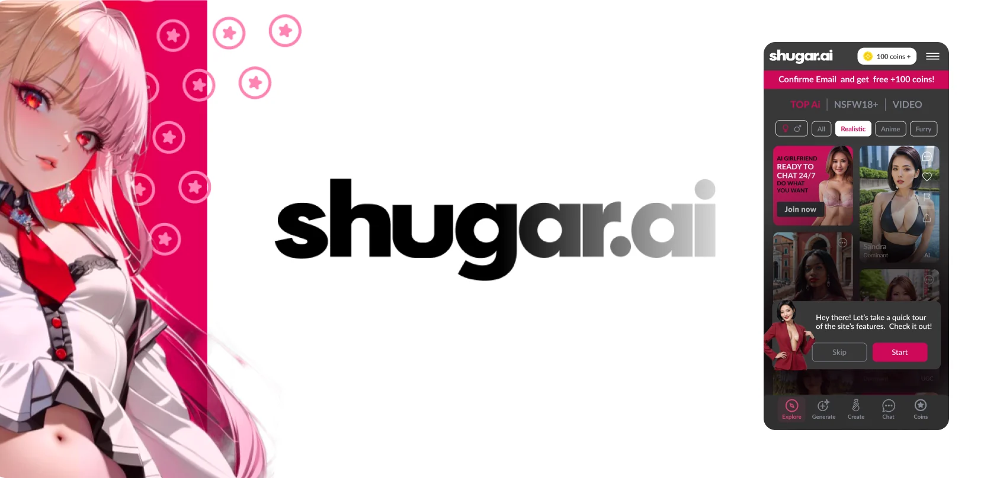
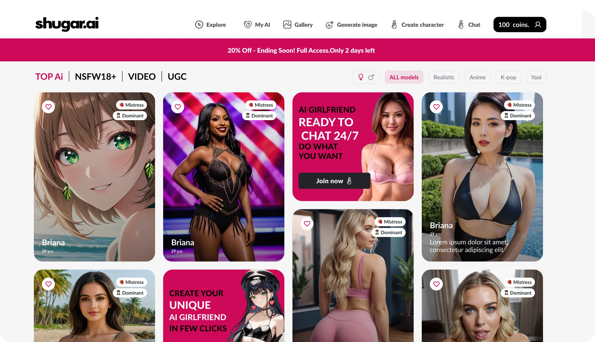

Связал создание AI-персонажа и дальнейшее взаимодействие
Спроектировал пользовательский цикл AI-платформы: от создания персонажа до общения и исследования галереи. Настройки, результат генерации и дальнейшие действия связаны в одном интерфейсе.

Задача, решение и итог
- 01Задача
На первом входе нужно помочь создать персонажа и показать следующие действия.
- 02Решение
Связал настройки, результат генерации, общение и галерею.
- 03Функциональный итог
Создание персонажа становится началом связанного пользовательского цикла.
С чем пришла команда
ShugarAi: платформа создания AI-персонажей. Пользователь взаимодействует с ними через текст, голос и изображения.
На первом входе нужно помочь начать: выбрать параметры, создать персонажа и понять, что с ним можно делать дальше. Затем продукт должен поддерживать несколько связанных способов взаимодействия.
- Провести пользователя к первому персонажу.
- Связать настройки генерации с полученным результатом.
- Дать понятный переход к общению и исследованию контента.
Собрал понятный цикл генерации
Спроектировал онбординг с AI-гайдом. Пользователь задаёт параметры, получает результат и может продолжить работу с ним.
Настройки остаются рядом с визуальным результатом. Это помогает связывать свои действия с ответом модели и менять параметры в том же контексте.
В дальнейший сценарий входят управление агентом в реальном времени и чат с голосом. Интерфейс поддерживает разные способы взаимодействия с персонажем.
От создания к взаимодействию
- AI-гайдНачать и настроить персонажа
- ГенерацияПолучить и изменить результат
- ВзаимодействиеТекст, голос и изображения

Добавил сценарий исследования контента
Спроектировал социальную галерею. Пользователь может исследовать персонажей и работы внутри платформы, помимо собственной генерации.
Генерация, общение и галерея связаны в пользовательском цикле. При переходе между ними сохраняется понятная структура продукта.
Связанные сценарии платформы
- Параметры
- Генерация
- Работа с результатом
- Персонаж
- Общение
- Социальная галерея
Как сценарии образуют продуктовый цикл
- СозданиеAI-гайд и параметры
- РезультатПросмотр и изменение
- ОбщениеТекст, голос и изображения
- ИсследованиеГалерея и новый персонаж
Как может распределяться стартовая когорта
Синтетическая модель
Что получилось
Получился связанный сценарий: AI-гайд помогает начать, настройки остаются в контексте генерации, а персонаж становится точкой входа в дальнейшее взаимодействие.
Социальная галерея дополняет собственную работу пользователя и даёт отдельный способ исследовать продукт.